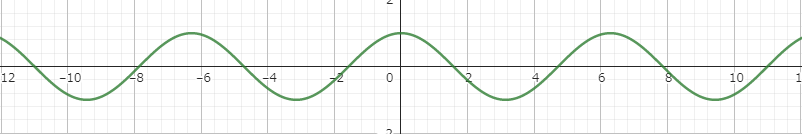

Inforde Blog
今日の運勢:
今日のラッキーアイテム:
Inforde Blog
今日の運勢:
今日のラッキーアイテム:
requestAnimationFrameの使い方

今回はJavaScriptでアニメーションを作る際、パフォーマンスを意識したアニメーションを作ることができるrequestAnimationFrameについて解説していきたいと思います。
まずはrequestAnimationFrameの基本的な使い方から紹介していこうと思います。requestAnimationFrameは一定時間ごとに引数に指定した関数を呼び出してくれるという物です。「setIntervalと同じじゃん。」と思う人もいるかもしれませんが、「requestAnimationFrame」は間隔の指定ができません。詳しくは第二章で解説しているので、読んでください。
では例を見てみましょう。下の例を実行すると円が拡大縮小を繰り返します。
<canvas id="myCanvas" width="300" height="300"></canvas>
<script>
const ctx=document.getElementById("myCanvas").getContext("2d")
let x=0
function hoge(){
requestAnimationFrame(hoge)
ctx.clearRect(0,0,300,300)
ctx.beginPath()
ctx.arc(150,150,Math.cos(x)*75+75,0,360*(Math.PI/180),false)
ctx.fillStyle='red'
ctx.fill()
ctx.closePath()
x+=0.05
}
hoge()
</script>
では詳しく見ていきましょう。まず１行目にはcanvasタグが記述されていますね。ここからもわかるように今回はcanvasを使用して実装していきます。そして２行目からは早速JavaScriptが記述されています。３行目ではcanvasを取得し定数ctxに代入していますね。４行目では変数xが宣言されています。そして５行目からは関数hogeが記述されています。そして今回のポイントは６行目です。requestAnimationFrameが記述されており引数に関数hogeが渡されています。requestAnimationFrameは毎回実行するたびに呼び出さなければならないので、hogeの中に書いてループするようにしています。
そのあと７～１４行目までは全部円を書くプログラムなので、本題からそれることからあまり詳しくは解説しませんが、７行目でcanvasをリセットし、canvasの中心に、赤色で半径が(Math.cos(x)*75+75)pxの円を書いています。ここで数学で習うコサインが使われていますが、一応説明しておくと、コサインのグラフを書くと下のようになることからもわかる通り、コサインはxを増加させていくとyの値は-1から1の間で波のように増えたり減ったりを繰り返します。これを応用し、増減する範囲を0から150にすることで、xの値が変化すると円の半径が0から150の間で増えたり減ったりを繰り返すわけです。
この次、16行目ですがここも今回のポイントの一つです。hogeの中にrequestAnimationFrameを使い、hogeを指定したからと言って、最初の一回が実行されなければ、繰り返して実行はされないので、例のように書く必要があります。
１章でも少し触れましたが、これって結局やってることsetIntervalとかsetTimeoutと同じじゃんっていう話ですよね。しかしsetIntervalよりパフォーマンスの面を考慮するとrequestAnimationFrameのほうがいいんです。具体的に説明しますと、まずsetIntervalと違って呼び出される間隔が指定できません。ではどのくらいの回数で呼び出されているかという話ですが、大体１秒間に６０回前後です。しかしこれはディスプレイをはじめとする様々な条件で変動します。これがrequestAnimationFrameの一番の特徴です。例えばタブを切り替えた時、setIntervalだとバックグラウンドでずっと実行し続けて、端末に負荷をかけますが。requestAnimationFrameだとその間は端末に負荷がかからないようにサボってくれます。下に何FPS（１秒間に何回描画されたか）を測ってくれる物を用意したので、タブを切り替えてみたりなんかいろいろしてみて実感してください。
Error!
そこまで正確ではないかもしれません。あくまでも参考程度に。
今回はrequestAnimationFrameの使い方について解説しました。これを使って何かを作る機会は多々あるのでマスターしておきましょう。（とは言ってもそこまで難しくはありませんが...）
Inforde Blog